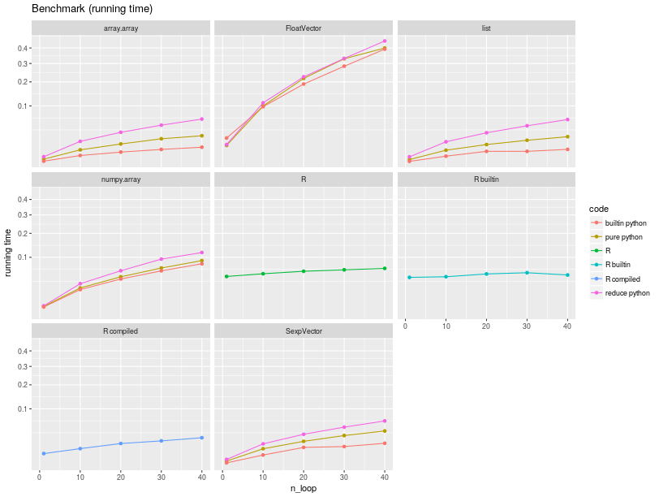

Performances¶
Optimizing for performances¶
Memory usage¶
R objects live in the R memory space, their size unbeknown to Python, and because of that it seems that Python does not always garbage collect often enough when large objects are involved. This is sometimes leading to transient increased memory usage when large objects are overwritten in loops, and although reaching a system’s memory limit appears to trigger garbage collection, one may wish to explicitly trigger the collection.
import gc
gc.collect()
As a concrete example, consider the code below. This has been used somewhere a unique benchmark Python-to-R bridge, unfortunately without considering specificities of the Python and R respective garbage collection mechanisms. The outcome of the benchmark changes dramatically, probably putting back rpy2 as the fastest, most memory efficient, and most versatile Python-to-R bridge.
import rpy2.robjects
import gc
r = rpy2.robjects.r
r("a <- NULL")
for i in range(20):
rcode = "a <- rbind(a, seq(1000000) * 1.0 * %d)" % i
r(rcode)
print r("sum(a)")
# explicit garbage collection
gc.collect()
Low-level interface¶
The high-level layer rpy2.robjects brings a lot of convenience, such a class mappings and interfaces, but obviously
with a cost in term of performances. This cost is neglibible for common usage, but compute-intensive programms traversing the
Python-to-R bridge way and back a very large number of time will notice it.
For those cases, the rpy2.rinterface low-level layer gets the programmer closer to R’s C-level interface, bring rpy2
faster than R code itself, as shown below.
A simple benchmark¶
As a simple benchmark, we took a function that would sum up all elements in a numerical vector.
In pure R, the code is like:
function(x)
{
total = 0;
for (elt in x) {
total <- total + elt
}
}
while in pure Python this is like:
def python_sum(x):
total = 0.0
for elt in x:
total += elt
return total
R has obviously a vectorized function sum() calling underlying C code, but the purpose of the benchmark is to measure the running time of pure R code.
We ran this function over different types of sequences (of the same length)
n = 20000
x_list = [random.random() for i in range(n)]
module = None
if kind == "array.array":
import array as module
res = module.array('f', x_list)
elif kind == "numpy.array":
import numpy as module
res = module.array(x_list, 'f')
elif kind == "FloatVector":
import rpy2.robjects as module
res = module.FloatVector(x_list)
elif kind == "SexpVector":
import rpy2.rinterface as module
module.initr()
res = module.IntSexpVector(x_list)
elif kind == "list":
res = x_list
elif kind == "R":
import rpy2.robjects as module
res = module.rinterface.IntSexpVector(x_list)
module.globalenv['x'] = res
res = None
The running times are summarized in the figure below.
{kind=link}
Iterating through a list is likely the fastest, explaining
why implementations of the sum in pure Python over this type are the fastest.
Python is much faster than R for iterating through a vector/list.
Measuring the respective slopes, and using the slope for the R code as reference we obtain relative speedup, that is how many times faster code runs.
| Function | Sequence | Speedup |
|---|---|---|
| builtin python | array.array | 28.94 |
| builtin python | FloatVector | 0.34 |
| builtin python | list | 47.94 |
| builtin python | numpy.array | 1.00 |
| builtin python | SexpVector | 11.74 |
| pure python | array.array | 8.29 |
| pure python | FloatVector | 0.34 |
| pure python | list | 9.93 |
| pure python | numpy.array | 0.91 |
| pure python | SexpVector | 5.10 |
| R compiled | R compiled | 5.16 |
| R | R | 1.00 |
| reduce python | array.array | 3.45 |
| reduce python | FloatVector | 0.30 |
| reduce python | list | 3.54 |
| reduce python | numpy.array | 0.93 |
| reduce python | SexpVector | 3.00 |
The object one iterates through matters much for the speed, and
the poorest performer is rpy2.robjects.vectors.FloatVector,
being almost twice slower than pure R. This is expected since the iteration
relies on R-level mechanisms to which a penalty for using a higher-level
interface must be added.
On the other hand, using a rpy2.rinterface.SexpVector provides
an impressive speedup, making the use of R through rpy2 faster that using
R from R itself. This was not unexpected, as the lower-level interface is
closer to the C API for R.
Since casting back a rpy2.robjects.vectors.FloatVector to its
parent class rpy2.rinterface.SexpVector is straightforward, we
have a mechanism that allows rpy2 to run code over R objects faster than
R can. It also means than rpy2 is at faster than other Python-to-R bridges
delegating all there code to be evaluated by R when considering the execution of
code. Traversing from Python to R and back will also be faster with rpy2
than with either pipes-based solutions or Rserve-based solutions.
What might seem more of a surprise is that iterating through a numpy.array is only
slightly faster than pure R, and slower than when using rpy2.rinterface.SexpVector.
This is happening because the subsetting mechanism for the later is kept much lighter weight,
giving speed when needed. On the other hand, accessing
rpy2.robjects.vectors.FloatVector is slower because the interface is currently
implemented in pure Python, while it is in C for numpy.array.
Finally, and to put the earlier benchmarks in perspective, it would be fair to note that python and R have a builtin function sum, calling C-compiled code, and to compare their performances.